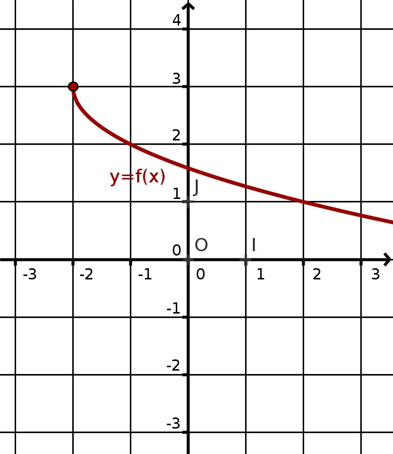
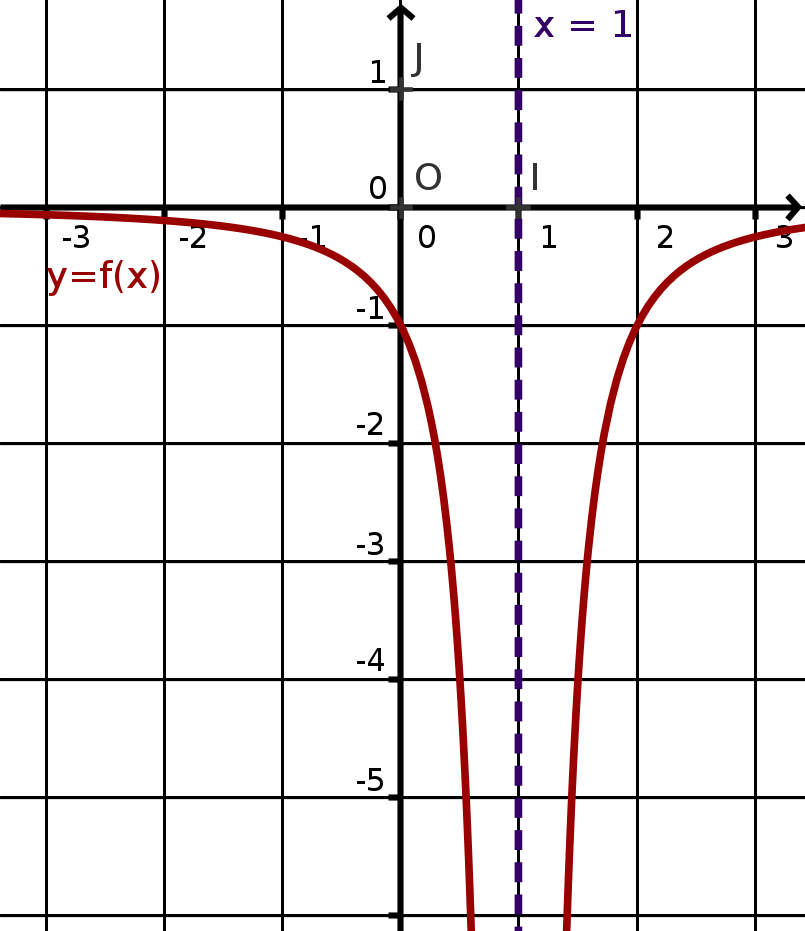
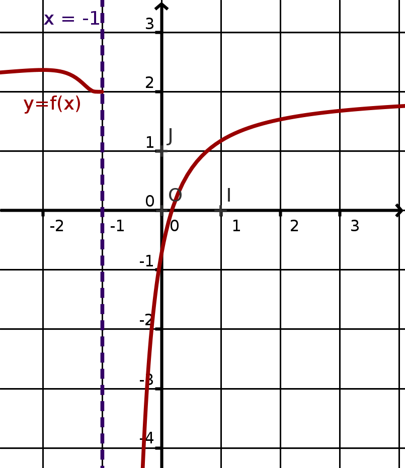
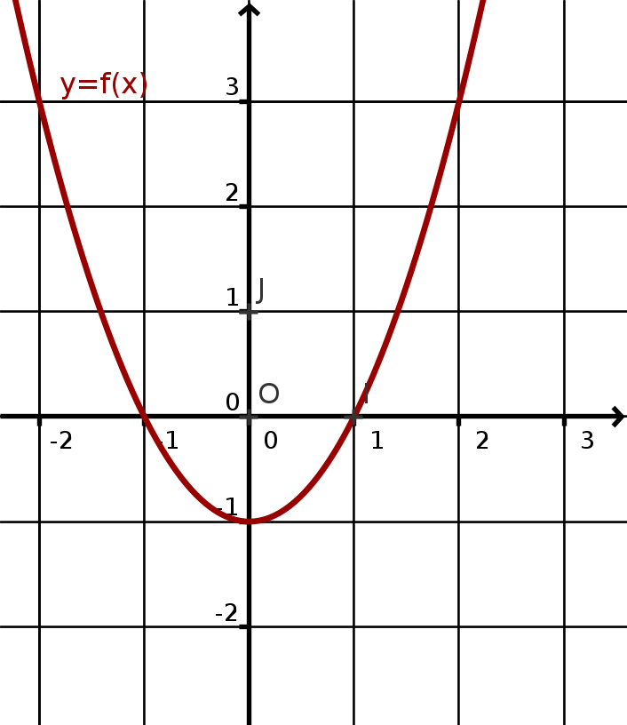
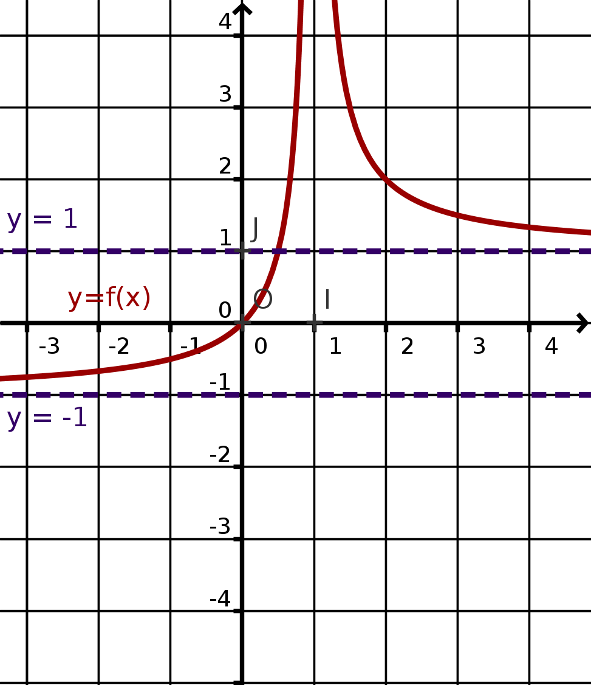
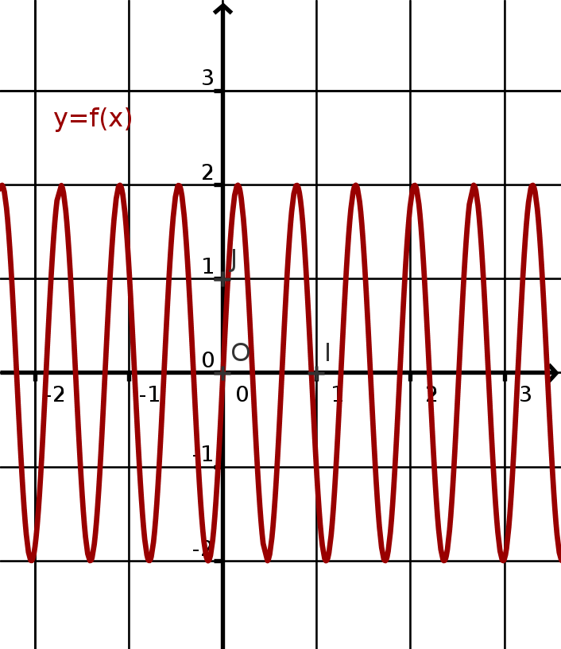
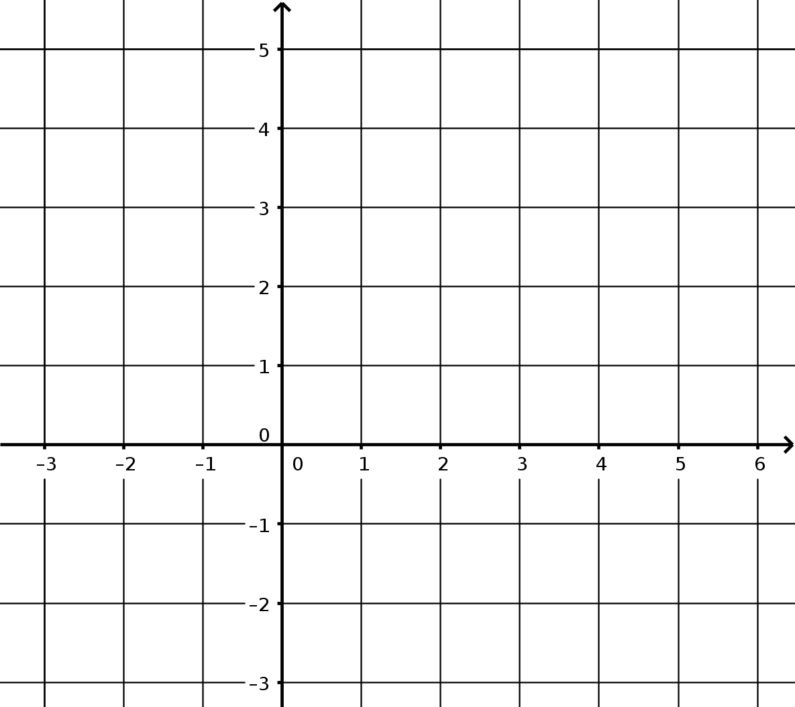

Fonctions : limites, continuité et valeurs intermédiaires
Limites
Définition de la limite d'une fonction
Cadre :
- Soit \(f\) une fonction définie sur \(\mathcal{D}_f\) (ensemble de définition de \(f\) et soit \(a\in\mathbb{R}\cup\left\{-\infty;+\infty\right\}\) adhérent à \(\mathcal{D}_f\), c'est à dire : \(a\) peut être dans \(\mathcal{D}_f\) ou bien au bord de \(\mathcal{D}_f\) ; par exemple, on peut avoir \(a=+\infty\) pour \(\mathcal{D}_f=\mathbb{R}\) ; autre exemple : \(a=0\) avec \(\mathcal{D}_f=\left]0;+\infty\right[\).
- On note \(l\in\mathbb{R}\cup\left\{-\infty;+\infty\right\}\) la limite envisagée.
Donner l'ensemble de définition \(\mathcal{D}_f\) de la fonction \(f\) définie par \(f(x)=\dfrac{1}{x^2}\).
En quelle(s) valeurs de \(a\) doit-on pouvoir déterminer \(\displaystyle\lim_{x\to a} f(x)\) ?
On dit que \(f(x)\) admet \(l\) pour limite quand \(x\) tend vers \(a\)
et
on
note :
\(\displaystyle\lim_{x\to a}{f(x)} = l\) ou \(\displaystyle \lim_a f = l\)
lorsque les images \(f(x)\) sont aussi proches que l'on veut de \(l\), à condition de prendre
n'importe
quel
\(x\) suffisamment proche de \(a\).
Limites à gauche / à droite : Si l'on ne considère que les valeurs
- de \(x<a\) on obtient la limite de \(f\) à gauche de \(a\), notée : \(\displaystyle\lim_{\begin{array}{l} x\to a \\ x<a \end{array}}f(x)\) ou \(\displaystyle\lim_{x\to a^-}{f(x)}\) ou \(\displaystyle\lim_{a^-} f\).
- de \(x>a\) on obtient la limite de \(f\) à droite de \(a\), notée : \(\displaystyle\lim_{\begin{array}{l} x\to a \\ x>a \end{array}}f(x)\) ou \(\displaystyle\lim_{x\to a^+}{f(x)}\) ou \(\displaystyle\lim_{a^+} f\).
- asymptote verticale :
Lorsque \(\displaystyle\lim_a f = l\) avec \(a\in\mathbb{R}\) et \(l=\pm\infty\), on dit que la courbe représentative de \(f\) admet une asymptote verticale d'équation \(x=a\). -
asymptote horizontale :
Lorsque \(\displaystyle\lim_a f = l\) avec \(a=\pm\infty\) et \(l\in\mathbb{R}\), on dit que la courbe représentative de \(f\) admet une asymptote horizontale d'équation \(y=l\).
Exemples graphiques
Limite en un point :

\(\displaystyle\lim_{x\to-2^+}f(x)=3\) : Il n'y a pas d'asymptote.
\(\displaystyle\lim_{x\to-2^+}f(x)=3\) : Il n'y a pas d'asymptote.

\(\displaystyle\lim_{x\to1}f(x)=-\infty\) : La courbe de \(f\) admet une asymptote verticale d'équation \(x=1\).
\(\displaystyle\lim_{x\to1}f(x)=-\infty\) : La courbe de \(f\) admet une asymptote verticale d'équation \(x=1\).

\(\displaystyle\lim_{x\to-1^+}f(x)=-\infty\)
et \(\displaystyle\lim_{x\to-1^-}f(x)=~2\) : La courbe de \(f\) admet une asymptote verticale d'équation \(x=-1\).
\(\displaystyle\lim_{x\to-1^+}f(x)=-\infty\)
et \(\displaystyle\lim_{x\to-1^-}f(x)=~2\) : La courbe de \(f\) admet une asymptote verticale d'équation \(x=-1\).
Limite en \(+\infty\) et \(-\infty\) :

\(\displaystyle\lim_{x\to-\infty}f(x)=+\infty\) et \(\displaystyle\lim_{x\to+\infty}f(x)=+\infty\).
Il n'y a pas d'asymptote.
\(\displaystyle\lim_{x\to-\infty}f(x)=+\infty\) et \(\displaystyle\lim_{x\to+\infty}f(x)=+\infty\).
Il n'y a pas d'asymptote.

\(\displaystyle\lim_{x\to-\infty}f(x)=-1\) et \(\displaystyle\lim_{x\to+\infty}f(x)=1\). La courbe de \(f\) admet deux asymptotes horizontales d'équation \(y=-1\) en \(-\infty\) et d'équation \(y=1\) en \(+\infty\).
\(\displaystyle\lim_{x\to-\infty}f(x)=-1\) et \(\displaystyle\lim_{x\to+\infty}f(x)=1\). La courbe de \(f\) admet deux asymptotes horizontales d'équation \(y=-1\) en \(-\infty\) et d'équation \(y=1\) en \(+\infty\).

\(f\) n'admet aucune limite en \(+\infty\) et en \(-\infty\).
sa courbe n'admet pas d'asymptote.
\(f\) n'admet aucune limite en \(+\infty\) et en \(-\infty\).
sa courbe n'admet pas d'asymptote.
Limites des fonctions usuelles
Fonctions puissances :
\(n\) est un entier \(>0\) ; on a : \(\displaystyle\lim_{x\to+\infty}x^n=+\infty\) et \(\displaystyle\lim_{x\to-\infty}x^n=\begin{array}{|l}+\infty\textrm{ si }n\textrm{ est pair} \\ -\infty\textrm{ si }n\textrm{ est impair}\\ \end{array}\)
Pour leurs inverses : \(\displaystyle\lim_{x\to-\infty}\frac{1}{x^n}=\lim_{x\to+\infty}\frac{1}{x^n}=0\)
En \(0\) ces inverses ne sont pas définis (\(0\) est valeur interdite). On a donc les limites suivantes au voisinage de \(0\) :
\(n\) est un entier \(>0\) ; on a : \(\displaystyle\lim_{x\to+\infty}x^n=+\infty\) et \(\displaystyle\lim_{x\to-\infty}x^n=\begin{array}{|l}+\infty\textrm{ si }n\textrm{ est pair} \\ -\infty\textrm{ si }n\textrm{ est impair}\\ \end{array}\)
Pour leurs inverses : \(\displaystyle\lim_{x\to-\infty}\frac{1}{x^n}=\lim_{x\to+\infty}\frac{1}{x^n}=0\)
En \(0\) ces inverses ne sont pas définis (\(0\) est valeur interdite). On a donc les limites suivantes au voisinage de \(0\) :
- si \(n\) est pair : \(\displaystyle\lim_{x\to0^-}\frac{1}{x^n}=\lim_{x\to0^+}\frac{1}{x^n}=+\infty\)
- si \(n\) est impair : \(\displaystyle\lim_{x\to0^-}\frac{1}{x^n}=-\infty\) et \(\displaystyle\lim_{x\to0^+}\frac{1}{x^n}=+\infty\).
Donner les limites en \(-\infty\) et \(0^-\) des expressions suivantes :
\(x^3\) ; \(\frac{1}{x^4}\) et \(\frac{1}{x^3}~\).
Polynômes :
Les limites en \(+\infty\) ou \(-\infty\) d'un polynôme \(P(x)=a_nx^n+a_{n-1}x^{n-1}+\cdots+a_1x+a_0\) sont les mêmes que celles du terme de plus haut degré \(a_nx^n\) (terme dominant).
Les limites en \(+\infty\) ou \(-\infty\) d'un polynôme \(P(x)=a_nx^n+a_{n-1}x^{n-1}+\cdots+a_1x+a_0\) sont les mêmes que celles du terme de plus haut degré \(a_nx^n\) (terme dominant).
Donner les limites en \(-\infty\) et \(+\infty\) des expressions suivantes :
\(A(x)=x^2-x\) ; \(B(x)=x-x^3\) et \(C(x)=2x^5+x^3\).
Limites et opérations :
Limites d'une somme :
\(l,l'\) sont des réels et désignent des limites finies.
| \(\displaystyle\lim_a f\) | \(l\) | \(l\) | \(l\) | \(+\infty\) | \(-\infty\) | \(-\infty\) |
|---|---|---|---|---|---|---|
| \(\displaystyle\lim_a g\) | \(l'\) | \(+\infty\) | \(-\infty\) | \(+\infty\) | \(-\infty\) | \(+\infty\) |
| \(\displaystyle\lim_a f+g\) | + | FI |
Compléter le tableau.
Calculer les limites suivantes :
- \(\displaystyle\lim_{x\to-\infty}\left(\frac{1}{x}+2\right)\) ;
- \(\displaystyle\lim_{x\to-\infty}\left(\frac{1}{x^2}+x^2\right)\) ;
- \(\displaystyle\lim_{x\to0^+}(\dfrac{1}{x}+x^2)\).
Limites d'un produit :
| \(\displaystyle\lim_a f\) | \(l\) | \(l\neq0\) | \(\pm\infty\) | \(0\) |
|---|---|---|---|---|
| \(\displaystyle\lim_a g\) | \(l'\) | \(\pm\infty\) | \(\pm\infty\) | \(\pm\infty\) |
| \(\displaystyle\lim_a f\times g\) | \(l\times l'\) | \(*\infty\) | \(*\infty\) | FI |
\(*\infty\) : pour trouver si \(*\) est \(+\) ou \(-\), on applique la règle des signes.
Calculer les limites suivantes :
- \(\displaystyle\lim_{x\to-\infty}(x-2)(x+7)\) ;
- \(\displaystyle\lim_{x\to0^+}(x-3)\frac{1}{x}\) ;
- \(\displaystyle\lim_{x\to-\infty}(x-1)x^3\).
Limites d'un quotient : attention à tenir compte du signe
(0+ ou 0-)
| \(\displaystyle\lim_a f\) | \(l\) | \(l\) | \(l\) | \(\pm\infty\) | \(\pm\infty\) | \(0\) |
|---|---|---|---|---|---|---|
| \(\displaystyle\lim_a g\) | \(l'\neq0\) | \(\pm\infty\) | \(0\) | \(l'\) | \(\pm\infty\) | 0 |
| \(\displaystyle\lim_a \frac{f}{g}\) | \(\frac{l}{l'}\) | \(0\) | \(*\infty\) | \(*\infty\) | FI | FI |
Calculer les limites suivantes :
- \(\displaystyle\lim_{x\to-\infty}\frac{\frac{1}{x}-3}{x^2}\) ;
- \(\displaystyle\lim_{x\to0^+}\frac{1}{x-1}\) ;
- \(\displaystyle\lim_{x\to-\infty}\frac{3-\dfrac{1}{x^2}}{x}\).
Limite d'une fonction composée :
Soit deux fonctions \(f\) et \(g\).
Si \(\left\{\begin{array}{l}\displaystyle\lim_a f=b \\ \displaystyle\lim_b g=c \\ \end{array}\right.\) alors \(\displaystyle\lim_a g(f(x))=c\).
Si \(\left\{\begin{array}{l}\displaystyle\lim_a f=b \\ \displaystyle\lim_b g=c \\ \end{array}\right.\) alors \(\displaystyle\lim_a g(f(x))=c\).
Calculer les limites suivantes :
- \(\displaystyle\lim_{x\to-\infty}\dfrac{1}{x^2+3}\) ;
- \(\displaystyle\lim_{x\to+\infty}\sqrt{2x+1}\) ;
- \(\displaystyle\lim_{x\to+\infty}\sqrt{25+\dfrac{1}{x}}\).
Traitement des formes indéterminées :
Il y a quatre FI : \(+\infty-\infty\) ; \(0\times\pm\infty\) ; \(\frac{\pm\infty}{\pm\infty}\) ; \(\frac{0}{0}\).
Il y a quatre FI : \(+\infty-\infty\) ; \(0\times\pm\infty\) ; \(\frac{\pm\infty}{\pm\infty}\) ; \(\frac{0}{0}\).
Il faut essayer de mettre le terme le plus « fort » en facteur et simplifier,
ou
bien
factoriser et simplifier, ou bien développer, ou bien se servir de la quantité conjuguée (en
présence de
racines carrées), ou bien utiliser les propriétés de croissances comparées (en présence de
\(\ln\)
et \(\exp\)
: cf chapitre correspondant).
Calculer les limites suivantes :
- \(\displaystyle\lim_{x\to+\infty}\frac{1}{x}(x^2+1)\) ;
- \(\displaystyle\lim_{x\to+\infty}\sqrt{x^2+1}-x\) ;
- \(\displaystyle\lim_{x\to0^+}\dfrac{1}{\sqrt{x}}-\dfrac{1}{x}\)
Limites et encadrements
Théorème des gendarmes / d'encadrement : (admis)
\(a, l\in\mathbb{R}\cup\left\{-\infty; +\infty\right\}\) et \(f\), \(g\) et \(h\) sont trois fonctions telles que \(\displaystyle\lim_a f = l\) et \(\displaystyle\lim_a h = l\), et pour tout \(x\) assez proche de \(a\), \(f(x)\leqslant g(x)\leqslant h(x)\) ;
alors on a : \(\displaystyle\lim_a g = l\).
\(a, l\in\mathbb{R}\cup\left\{-\infty; +\infty\right\}\) et \(f\), \(g\) et \(h\) sont trois fonctions telles que \(\displaystyle\lim_a f = l\) et \(\displaystyle\lim_a h = l\), et pour tout \(x\) assez proche de \(a\), \(f(x)\leqslant g(x)\leqslant h(x)\) ;
alors on a : \(\displaystyle\lim_a g = l\).
Lorsque \(l=+\infty\), l'inégalité de gauche (minoration) suffit ; lorsque \(l=-\infty\), l'inégalité de
droite (majoration) suffit.
À l'aide d'encadrements bien choisis, déterminer les limites en \(+\infty\) des fonctions suivantes :
| \(a(x)=\frac{\cos(x)}{x}+2\) | \(b(x)=\sin(x)+\sqrt{x}\) | \(c(x)=-x^2+\sin(3x)+x \cos(2x)\) |
\(g(x)\) est une fonction telle que pour tout \(x\geqslant 1\), on a :
\(\frac{1}{x}\leqslant g(x)\leqslant \frac{x+1}{x+2}\). Cet encadrement permet-il de conclure sur une
limite éventuelle de \(g\) en \(+\infty\) ?
Continuité
Soit \(a\) un réel.
Une fonction \(f\) est dite continue lorsqu'on a :
\(\displaystyle\lim_{x\to a^-}f(x)=f(a)=\displaystyle\lim_{x\to a^+} {f(x)}\).
- Si on a juste l'égalité de gauche, on dit que \(f\) est continue à gauche de \(a\).
- Si on a juste l'égalité de droite, on dit que \(f\) est continue à droite de \(a\).
Lorsque \(a\) est sur le bord gauche (resp. droit) d'un intervalle de l'ensemble de définition de \(f\),
on
ne
considère pas la limite en \(a^-\) (resp. en \(a^+\)).
La fonction racine carrée est continue en \(0\) car \(\displaystyle\lim_{x\to 0^+}{\sqrt{x}}=0\) et
\(\sqrt{0}=0\).
Graphiquement, une fonction est continue lorsque sa courbe peut être tracée sans lever le crayon
de la feuille :
sa courbe ne présente pas de «sauts» de valeurs.
Les fonctions affines, carré, inverse, racine carrée, valeur absolue, polynômes, \(\cos\),
\(\sin\)
et
\(\tan\)
sont continues sur tout intervalle inclus dans leurs ensemble de définition.
fonction partie entière :
Une fonction définie sur \(\mathbb{R}\) mais non continue en chaque entier relatif : la fonction partie entière :
À tout réel \(x\) on associe l'entier (relatif) \(E(x)\) immédiatement inférieur à \(x\).
Une fonction définie sur \(\mathbb{R}\) mais non continue en chaque entier relatif : la fonction partie entière :
À tout réel \(x\) on associe l'entier (relatif) \(E(x)\) immédiatement inférieur à \(x\).
-
Remplir le tableau de valeurs :
\(x\) 0 2 2,1 2,6 -3 -3,9 -3,1 \(E(x)\) - Tracer la courbe représentant la fonction \(E\) dans le repère ci-contre.
- Discuter de la continuité à gauche et à droite de \(E\) en chaque entier.
- Sur quel ensembles \(E\) est-elle :
- Continue ?
- Continue à gauche ?
- Continue à droite ?
- Dérivable ?

- Quel est l'ensemble de définition \(\mathcal{D}_f\) de cette fonction \(f\) ?
- Donner les limites aux bords de \(\mathcal{D}_f\) ainsi que les asymptotes éventuelles à sa courbe \(\mathcal{C}_f\).
- Pour quelle(s) valeurs de \(x\) la fonction \(f\) n'est-elle pas continue ? Préciser les limites à gauche et à droite en ces valeurs, ainsi que la valeur de \(f(x)\), si elle existe.
- Préciser les intervalles sur lesquels \(f\) est continue.
- Déterminer les solutions de \(f(x)=0\).
- Déterminer les solutions de \(f(x)=2\) sur \(\left]-2;4\right]\).

(admise) Dérivable \(\Rightarrow\) continue
Si une fonction \(f\) est dérivable sur un intervalle \(I\), alors elle est continue sur \(I\).
Si une fonction \(f\) est dérivable sur un intervalle \(I\), alors elle est continue sur \(I\).
La réciproque est fausse : la fonction racine carrée est continue en \(0\) mais pas dérivable en
\(0\).
Continuité et suites (admise)
Les deux affirmations suivantes sont équivalentes :
Les deux affirmations suivantes sont équivalentes :
- \(f\) est une fonction continue en \(x=a\in\mathcal{D}_f\) ;
- pour toute suite \((x_n)\) convergent vers \(a\), la suite \((f(x_n))\) converge vers \(a\).
Tout nombre \(x\) tel que \(f(x)=x\) est appelé point fixe de \(f\)
Suites récurrentes et points fixes
\((u_n)\) est une suite définie par \(u_{n+1}=f(u_n)\). On suppose que \((u_n)\) converge vers \(l\) et que \(f\) est continue en \(l\) ; alors \(f(l)=l\) (la limite est un point fixe de \(f\)).
\((u_n)\) est une suite définie par \(u_{n+1}=f(u_n)\). On suppose que \((u_n)\) converge vers \(l\) et que \(f\) est continue en \(l\) ; alors \(f(l)=l\) (la limite est un point fixe de \(f\)).
On note \(f(x)=x^2\) et on définit la suite \(\left\{\begin{array}{l}u_{n+1}=f(u_n)\\u_0=0{,}5\\
\end{array}\right.\).
- Résoudre \(f(x)=x\) pour déterminer les points fixes de \(f\)
- Démontrer que \((u_n)\) est décroissante.
- En déduire que \((u_n)\) converge.
- Déterminer la limite de \((u_n)\) (justifier).
- Attention, une fonction peut avoir plusieurs point fixes.
- Il faut bien s'assurer de la convergence de la suite ; le fait que \(f\) ait un point fixe ne suffit pas : ainsi, pour \(f(x)=2x\) et \(u_0=1\), \((u_n)\) diverge vers \(+\infty\), bien que \(f\) admette 0 pour point fixe.
Dérivation (rappels)
Nombre dérivé et tangente
Cadre :
On se donne une fonction \(f\) et on se place en un \(x\) fixé. Soit \(dx\) un petit
accroissement
de la
variable \(x\) (positif ou négatif), correspondant à un accroissement
\(df=f(x+dx)-f(x)\) des
images.
Si l'on fait tendre \(dx\) vers \(0\), la droite \(D\) prend une position de tangente à la courbe de \(f\) en \(x\).
Si l'on fait tendre \(dx\) vers \(0\), la droite \(D\) prend une position de tangente à la courbe de \(f\) en \(x\).
On appelle la quantité \(\frac{df}{dx}\) taux d'accroissement ou taux de
variation de \(f\) entre \(x\) et \(x+dx\).
Si \(\displaystyle\lim_{dx\to0} \frac{df}{dx}\) existe,
on dit que \(f\) est dérivable en \(x\) ; on note alors \(f'(x)\) ou bien
\(\displaystyle\frac{\textrm{d}f}{\textrm{d}x}(x)\) cette limite, que l'on appelle
nombre
dérivé
de \(f\) en \(x\), et qui indique le coefficient directeur de la tangente à la courbe de \(f\)
en
\(x\).
L'équation de la tangente à la courbe de \(f\) en \(x=a\) est :
\(y=f'(a)(x-a)+f(a)\).
Calculer l'équation de la tangente à la courbe de \(f(x)=x^3-2x\) en \(x=0{,}5\).
On a tracé sur la figure ci-contre la courbe de \(f\) ainsi que des tangentes à \(f\) en quatre
points d'abscisse entière.
- Donner l'ensemble de définition de \(f\) ainsi que les limites de \(f\) aux bornes de \(f\), et les asympotes éventuelles
- Donner les valeurs de \(f(x)\) pour \(x\in\left\{-2;0;2;4;8\right\}\).
- Donner le tableau de variation de \(f\), ainsi que le tableau de signe de sa dérivée \(f'\).
- Donner les valeurs de \(f'(x)\) pour \( x\in\left\{-2;0;2;4;8 \right\} \) et écrire les équations des tangentes correspondantes.
Dérivées de fonctions usuelles
| \(f(x)\) | constante | \(x^\alpha\) | \(\frac{1}{x}\) | \(\sqrt{x}\) | \(\textrm{e}^x\) | \(\sin x\) | \(\cos x\) | \(\tan x\) |
|---|---|---|---|---|---|---|---|---|
| \(f'(x)\) | 0 | \(\alpha x^{\alpha-1}\) | \(\frac{-1}{x^2}\) | \(\frac{1}{2\sqrt{x}}\) | \(\textrm{e}^x\) | \(\cos x\) | \(-\sin x\) | \(1+\tan^2(x)\) |
- Lorsque \(\alpha\in\mathbb{N}\), la fonction \(x\mapsto x^\alpha\) est définie sur \(\mathbb{R}\) entier.
- Lorsque \(\alpha\) est un entier strictement négatif, elle n'est pas définie en 0 mais l'est partout ailleurs.
- Lorsque \(\alpha\) est un réel non entier positif, elle est définie sur \(\left[0;+\infty\right[\)
- Lorsque \(\alpha\) est un réel non entier négatif, elle est définie sur \(\left]0;+\infty\right[\)
- En utilisant le fait que \(\frac{1}{x}=x^{-1}\), retrouver la formule de la dérivée de \(x\mapsto\frac{1}{x}\).
- En utilisant le fait que \(\sqrt{x}=x^{\frac{1}{2}}\), retrouver la formule de la dérivée de \(x\mapsto\sqrt{x}\).
Limites utilisant les taux de variations
Calculer les limites suivantes en utilisant des taux de variation \(\displaystyle\lim_{x\to x_0}\dfrac{f(x)-f(x_0)}{x-x_0}=f'(x_0)\) :
Calculer les limites suivantes en utilisant des taux de variation \(\displaystyle\lim_{x\to x_0}\dfrac{f(x)-f(x_0)}{x-x_0}=f'(x_0)\) :
| \(\displaystyle\lim_{x\to 0} \dfrac{\cos(x)-1}{x}\) | \(\displaystyle\lim_{x\to 1} \dfrac{x^{15}-1}{x-1}\) | \(\displaystyle\lim_{x\to 1} \dfrac{\sqrt{x}-1}{x-1}\) |
Dérivation et opération
\(u\) et \(v\) sont deux fonctions dérivables et \(k\) est une constante réelle
| \(f\) | \(ku\) | \(u+v\) | \(u\times v\) | \(\frac{1}{u}\) avec \(u\neq0\) | \(\dfrac{u}{v}\) avec \(v\neq0\) |
|---|---|---|---|---|---|
| \(f'\) | \(ku'\) | \(u'+v'\) | \(u'v + uv'\) | \(\frac{-u'}{u^2}\) | \(\dfrac{u'v-uv'}{v^2}\) |
Démontrer la formule donnant les dérivées d'un inverse et d'un quotient à parir de
la formule du produit.
-
- On considère que \(u\) ne s'annule pas. Exprimer \(v'\) en fonction de \((uv)'\), \(u'v\) et \(u\).
- En posant \(v=\frac{1}{u}\), retrouver la formule de la dérivée de l'inverse.
-
- Dériver \(u\times\frac{1}{v}\) en utilisant la formule du produit.
- En déduire la dérivée de \(\frac{u}{v}\).
Calculer les dérivées des fonctions suivantes
Par définition, \(d(x)=\tan(x)\). En déduire deux écritures possibles de \((\tan(x))'\).
| \(a(x)=3x^2-2x+1\) | \(b(x)=x\cos(x)\) | \(c(x)=\dfrac{1}{x+\textrm{e}^x}\) | \(d(x)=\dfrac{\sin(x)}{\cos(x)}\) |
Par définition, \(d(x)=\tan(x)\). En déduire deux écritures possibles de \((\tan(x))'\).
Fonctions composées
Lorsque l'ensemble des images d'une fonction \(f\) définie sur \(\mathcal{D}_f\) est inclus dans
l'ensemble de définition \(\mathcal{D}_g\) d'une fonction \(g\),
On peut définir (sur \(\mathcal{D}_f\)) la fonction composée de \(f\) par \(g\), notée
\(g\circ f\) et définie par \(g\circ
f(x) =
g(f(x))\).
En résumé, appliquer \(g\circ f\) à un nombre \(x\) revient à appliquer \(f\) pour calculer \(f(x)\)
et à appliquer \(g\) au \(f(x)\) obtenu :
\(x \stackrel{f}{\mapsto} f(x) \stackrel{g}{\mapsto} g(f(x))\) revient à \(x \stackrel{g\circ
f}{\mapsto} g(f(x))\).
Si \(f(x)=3x-2\) et \(g(x)=\sqrt{x}\), alors \(g\circ f(x)=\sqrt{3x-2}\).
Mais attention à l'ordre : \(f\circ g(x)=3\sqrt{x}-2\).
Mais attention à l'ordre : \(f\circ g(x)=3\sqrt{x}-2\).
\(f\), \(g\) et \(u\) désignent des fonctions dérivables ; \(a\), \(b\) et \(\alpha\) sont des constantes réelles ;.
| \(f\) | \(g\circ f(x)\) | \(u(ax+b)\) | \(u^\alpha\) | \(\textrm{e}^u\) |
|---|---|---|---|---|
| \(f'\) | \(g'\circ f(x)f'(x)\) | \(au'(ax+b)\) | \(\alpha u^{\alpha-1}u'\) | \(u'\textrm{e}^u\) |
En admettant la formule dans la première colonne, en déduire toutes les autres.
Dérivée de la fonction réciproque (dur)
\(f\) et \(g\) sont deux fonctions telles que \(f\circ g (x)=x\) pour tout \(x\) dans un intervalle I.
\(f\) et \(g\) sont deux fonctions telles que \(f\circ g (x)=x\) pour tout \(x\) dans un intervalle I.
- Exprimer \(g'(x)\) en fonction de \(f\), \(f'\) et \(g\).
- En déduire la dérivée des fonctions \(\arccos\), \(\arcsin\) et \(\arctan\) ; en déduire la dérivée de la fonction réciproque de \(\exp\) (appelée \(\ln\)).
Principe de Lagrange
Une fois que l'on a calculé la dérivée d'une fonction, il faut la factoriser
au
mieux
pour
déterminer son signe. En effet connaître le signe de la dérivée \(f'\) nous permet de
connaître
les
variations
de \(f\) :
- \(f'>0\) sur \(I\) (\(f'\) peut même s'annuler en des points isolés) \(\Rightarrow\) \(f\) est strictement croissante sur \(I\) ;
- \(f'=0\) sur tout l'intervalle \(I\) \(\Rightarrow\) \(f\) est constante sur \(I\) ;
- \(f'<0\) sur \(I\) (\(f'\) peut même s'annuler en des points isolés) \(\Rightarrow\) \(f\) est strictement décroissante sur \(I\).
Si \(f'\) s'annule et change de signe pour en \(a\) dans \(I\), alors
- \(f'\) passe de \(-\) à \(+\) \(\Rightarrow\) \(f\) admet un minimum local pour \(x=a\) ;
- \(f'\) passe de \(+\) à \(-\) \(\Rightarrow\) \(f\) admet un maximum local pour \(x=a\) .
La condition de changement de signe est importante : en effet \(x\mapsto x^3\) a pour dérivée
\(3x^2\)
qui
s'annule en \(0\) mais ne change pas de signe (elle reste positive) ; la fonction cube n'admet
pas
de
max/min en
\(x=0\) (elle est strictement croissante).
Étudier les fonctions suivantes : ensemble de définition, dérivée, variations, limites.
| \(f(x)=\dfrac{x^2+2x+3}{x^2+2}\) | \(g(x)=10x\sqrt{x^2-5}\) | \(h(x)=\textrm{e}^{2x+1}+3x\) |
Non-dérivabilité : aspect graphique
Une fonction continue sur un intervalle \(I\) n'est pas forcément dérivable en tout \(x\) dans
\(I\)
;
on peut
visualiser ce caractère non-dérivable lorsqu'on observe :
- une rupture de pente, ou point anguleux (deux demi-tangentes qui forment un angle non plat), comme pour la fonction valeur absolue en \(0\) ;
- une tangente verticale (la dérivée tend alors vers \(\pm\infty\)), comme pour la racine carrée en \(0\).
On note \(f\) la fonction définie sur \(\mathbb{R}\) par \(f(x)=\left|\begin{array}{l}x^2-4\textrm{ si
}x\leqslant 1 \\ \frac{-2}{x}-1\textrm{ si }x>1\end{array}\right.\).
- Cette fonction est-elle dérivable ?
- Étudier cette fonction.
Théorème des valeurs intermédiaires
Conventions dans un tableau de variation
Convention : Une flèche dans un tableau de variation d'une fonction indique à la
fois
:
- la stricte croissance ou stricte décroissance de \(f\) sur l'intervalle correspondant ;
- la continuité de la fonction \(f\) sur l'intervalle correspondant.
Théorème des valeurs intermédiaires
But : Soit \(k\) un réel et \(f\) une fonction. On cherche à résoudre l'équation
\(f(x)=k\).
(admis) théorème des valeurs intermédiaires
Soit \(f\) une fonction continue sur un intervalle \(I\) et \(a <b\) deux réels de \(I\).
Si \(k\) est compris entre \(f(a)\) et \(f(b)\), il existe au moins un réel \(c\in[a;b]\) tel que \(f(c)=k\).
Soit \(f\) une fonction continue sur un intervalle \(I\) et \(a <b\) deux réels de \(I\).
Si \(k\) est compris entre \(f(a)\) et \(f(b)\), il existe au moins un réel \(c\in[a;b]\) tel que \(f(c)=k\).
Il est aussi possible d'utiliser des valeurs limites de \(f\).
Tracer une fonction \(f\) continue sur \([-3;6]\) telle que \(f(x)=2\) ait
\(3\)
solutions :
Soit \(f\) la fonction définie sur \(\mathbb{R}\) par \(f(x)=\frac{1}{3}x^{3} +
\frac{1}{2}x^{2} - 6x - 1\)
- Étudier les variations de \(f\).
- Démontrer que l'équation \(f(x)=3\) a au moins une solution.
unicité de la solution
Soit \(f\) une fonction continue et strictement monotone sur un
intervalle
\(I\)
et
\(a<b\) deux réels de \(I\).
Si \(k\) est compris entre \(f(a)\) et \(f(b)\), il existe un unique réel \(c\in[a;b]\) tel que \(f(c)=k\).
Si \(k\) est compris entre \(f(a)\) et \(f(b)\), il existe un unique réel \(c\in[a;b]\) tel que \(f(c)=k\).
Il est toujours possible d'utiliser des valeurs limites de \(f\).
Obtenir une approximation d'une solution de l'équation \(f(x)=k\), avec \(k\) réel fixé
Il existe deux méthodes :
- Par balayage :
On utilise la table de calculatrice, en affinant le pas jusqu'à la précision désirée, pour localiser la solution. - Par dichotomie :
Lorsque l'on a localisé la solution dans un intervalle \([a;b]\), on calcule \(f\left(\frac{a+b}{2}\right)\) ; en s'aidant du tableau de variations, on voit si la solution est localisée dans la première moitié ou seconde moitié de l'intervalle \([a;b]\) ; on répète alors la même méthode plusieurs fois sur des intervalles imbriqués dont les longueurs diminuent à chaque étape de moitié, jusqu'à arriver à la précision désirée.
(suite) Soit \(f\) la fonction définie sur \(\mathbb{R}\) par
\(f(x)=\frac{1}{3}x^{3}+\frac{1}{2}x^{2}
- 6x -
1\)
- Démontrer que l'équation \(f(x)=3\) a une unique solution dans \(\left[3;+\infty\right[\).
- Donner une valeur approchée de cette solution à \(10^{-2}\) près en utilisant une dichotomie.
Méthode de Newton (dur) :
Newton propose une méthode qu'il pense plus rapide que la dichotomie pour trouver la solution d'une équation \(f(x)=0\).
Partant d'un point \(x_0\) proche de la solution, il construit la suite \((x_n)\) comme ceci : \(x_{n+1}\) est l'abscisse du point d'intersection de la tangente à la courbe de \(f\) en \(x_n\) avec l'axe \((Ox)\).
Appliquer cette méthode à l'équation \(x^2-3=0\). Y a-t-il convergence vers la solution partant de \(x_0=2\) ? Est-elle rapide ?
Donner un exemple d'équation pour laquelle la méthode de Newton échoue.
Newton propose une méthode qu'il pense plus rapide que la dichotomie pour trouver la solution d'une équation \(f(x)=0\).
Partant d'un point \(x_0\) proche de la solution, il construit la suite \((x_n)\) comme ceci : \(x_{n+1}\) est l'abscisse du point d'intersection de la tangente à la courbe de \(f\) en \(x_n\) avec l'axe \((Ox)\).
Appliquer cette méthode à l'équation \(x^2-3=0\). Y a-t-il convergence vers la solution partant de \(x_0=2\) ? Est-elle rapide ?
Donner un exemple d'équation pour laquelle la méthode de Newton échoue.